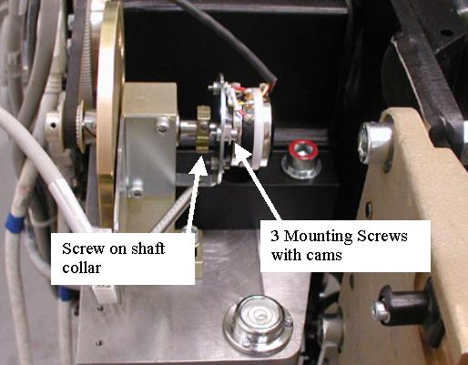

Operating Documentation
Direction 5193574-800, Rev# 22
LightSpeed 7.X Service Methods
Module Version 1.0, Version Date 10/20/08
Operating Documentation |
| Required Persons | Preliminary Reqs | Procedure | Finalization |
|---|---|---|---|
| 1 | Not Applicable | 60 mins | 30 mins |
This procedure defines the process required to replace the tilt potentiometer and test the system.
| Last Revised: | May 30, 2008 |
| Item | Qty | Effectivity | Part# | Manufacturer | |
|---|---|---|---|---|---|
| ESD Wrist-Band | 1 | - | - | - | |
| 7/64 and 3/32 inch hex keys | 1 | - | - | - | |
| Voltmeter (DC) | 1 | - | - | - | |
| Item | Qty | Effectivity | Part# | Manufacturer | |
|---|---|---|---|---|---|
| Tilt Potentiometer | 1 | - | 5122696 | - | |
| ||||
| Shock Hazard | ||||
| Voltage Present | ||||
| No service on left side while energized. |
Remove gantry right side cover.
Refer to Parts Replacement → Gantry → Enclosure → (Cover Removal Procedure).
Turn OFF the Axial Drive, HVDC and 120 VAC switches on the gantry’s Service Switch Panel.
Remove the gantry left side cover, top covers and front cover.
Perform all required LOTO activities.
At the TGPU, disconnect the cable from the tilt pot to the TGPU and cut any cable ties holding the cable.
Loosen the hex screw on the shaft collar and loosen the 3 mounting screws holding the tilt pot to the mounting plate. The cams should twist with the screw when loosening to the flat side of the cam allowing the pot to be removed from the mounting plate when all 3 screws are loosened. If not, twist the cams with your fingers to release the tilt pot. Reference Illustration 1.
Illustration 1: Tilt Pot Assembly

Remove the Tilt Pot.
Install the new Tilt Pot onto the mounting plate using the 3 screws and cams. Twist the cams if necessary to fit the tilt pot to the plate, then tighten the 3 screws which will twist the cams in place to hold the tilt pot.
Tighten the screw on the shaft collar.
Reconnect the cable from the tilt pot to the TGPU and install cable ties in positions removed as applicable.
Position the front cover in front of the gantry to allow connection of the cables and connect the cables to the front cover.
Remove any LOTO actions taken and restore system power and control.
With the front cover connected but not installed, turn on the gantry 120 VAC service switch from the service switch panel. This prepares the gantry for the start of the finalization steps.
Remember to enable the table drives using the push button on the bottom right side of the service switch panel.
Adjust the pot per Gantry Tilt Pot Adjustment including Tilt characterization as defined in the pot adjustment procedure.
Turn off the Gantry 120 VAC service switch from the service switch panel.
Install the gantry front cover and top covers.
Turn on the gantry service switches for the 120 VAC, HVDC and Axial Drive from the service switch panel.
Remember to enable the table drives using the push button on the bottom right side of the service switch panel.
Perform Tilt Characterization
Run the Tilt Characterization procedure from the Service Desktop, Calibration > Mechanical Calibration.
Select the [Characterize Tilt] button and follow the instructions on the screen.
Install the gantry left and right side covers.